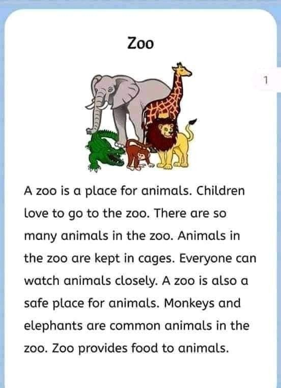

A zoo, also known as a zoological garden, is a facility where animals are kept in enclosures for public exhibition and often for conservation purposes. They are popular tourist destinations, with millions of visitors annually, and play a role in animal breeding, research, and education.
Here's a more detailed look:

Purpose:
Zoos serve multiple purposes, including public education, animal conservation, and scientific research.
Exhibits:
Zoos house a wide variety of animal species, from mammals and birds to reptiles and fish.
Conservation:
Many zoos participate in breeding programs to help conserve endangered species.
Education:
Zoos offer educational programs for visitors, including interactive exhibits, guided tours, and educational materials.
Popularity:
Zoos are a major tourist attraction, drawing millions of visitors each year.